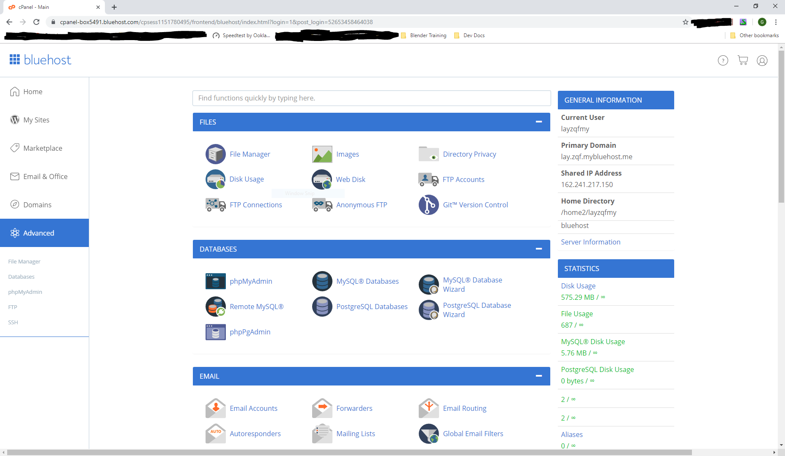
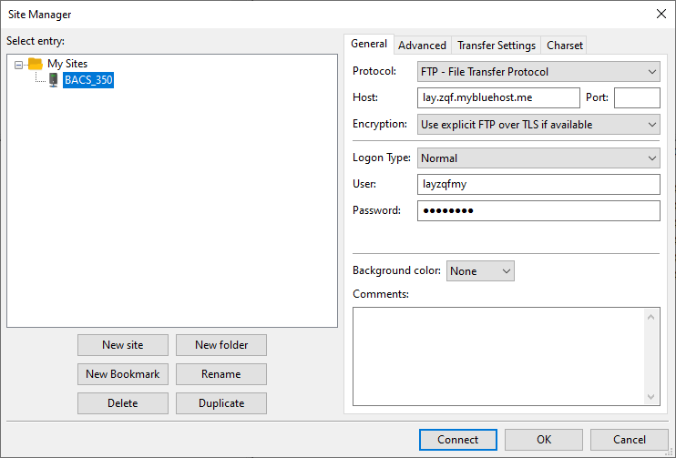
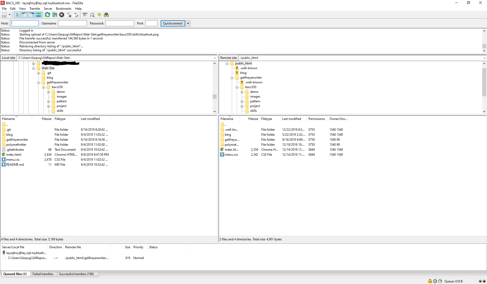
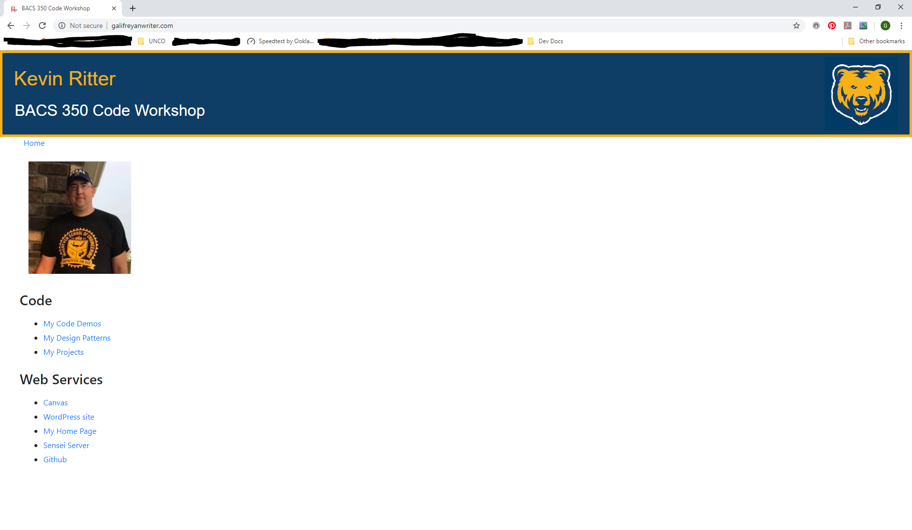
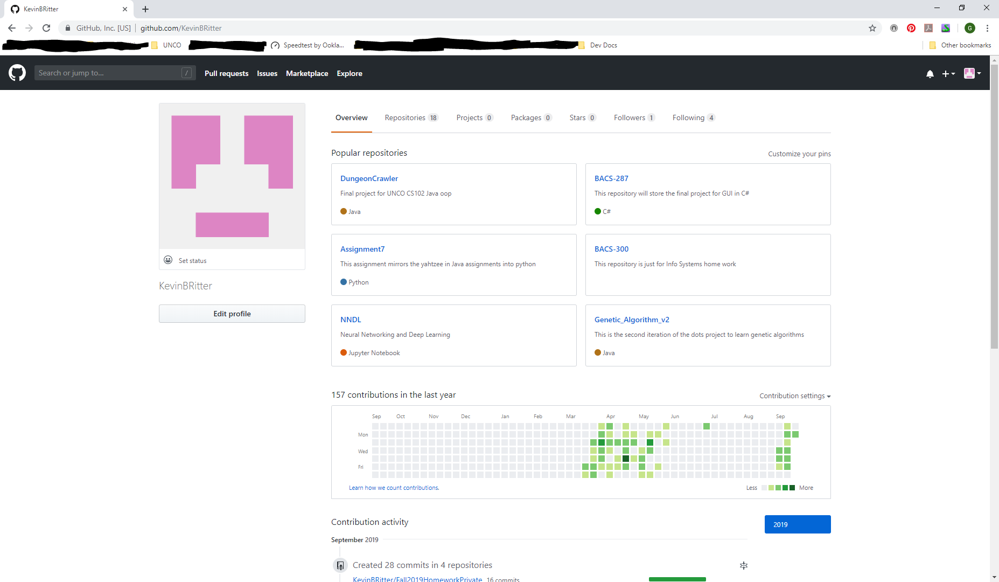
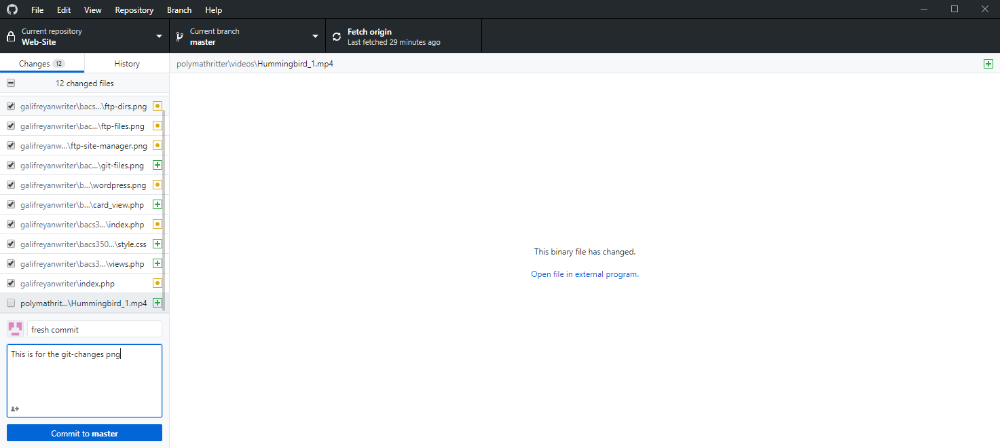

Development Skills.
There are essential development skills that must be mastered in this class.
Each of these skills can be demonstrated by a screen shot of your computer
system.
Skill #1 - Web Hosting
- Sign Up for Bluehost
- Register your domain with Sensei Server

Skill #2 - Filezilla Connect
- Download and Run
- Enter the Password and Log-In

Skill #3 - Filezilla Uploads
- Show the Matching File Structures
- Once connected you can transfer files directly.

Skill #4 - Web Hosting
- Use the FTP Site Manager
- This is the same as FTP directory
Skill #5 - Word Press
- Add a Profile to Word Press
- I deleted mine so linked to homepage instead.

Skill #6 - Git Repos
- Sign Up Git Hub
- Create and use Repositories

Skill #7 - Git Changes
- Commit and Push
- Update a Repository
